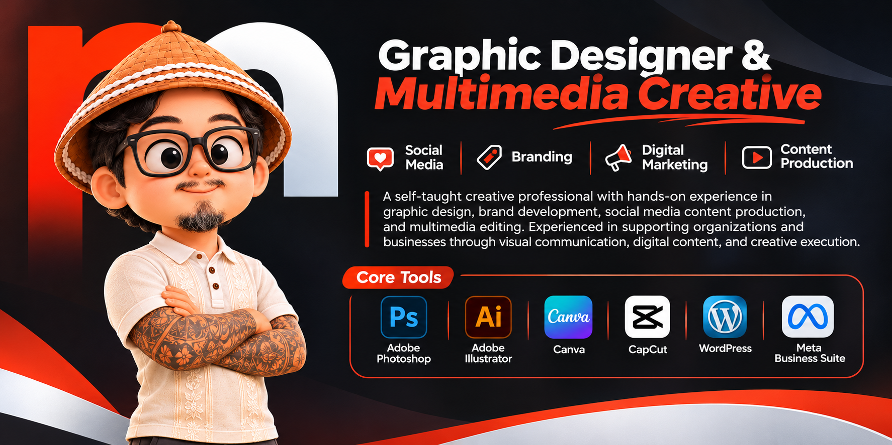

COMIC BOOK DESIGN
10 / 10
CREATIVE WORK · SELECTED VISUALSINDEPENDENT GRAPHIC DESIGNER · PHILIPPINES
Arjay Freg Balabag®
Graphic Designer · Layout Artist · Visual Storyteller
I create visual identities, campaign graphics, print layouts, and digital content that help ideas connect with people. Welcome to my creative portfolio.
09 SELECTED PROJECTSPRINT & DIGITAL DESIGNOPEN TO CREATIVE PROJECTS
THE WORK, UP CLOSE
Selected projects.
A selection of creative work across event campaigns, community initiatives, education, and graphic design.
BROWSE BY COLLECTION
Explore albums.
Open a folder to browse a curated set of photographs.
A SELECTION OF VISUAL PROJECTS · MORE WORK CAN BE SHARED ON REQUEST
A LITTLE ABOUT THE DESIGNER
Good design
makes things clear.
I’m a layout artist and graphic designer focused on making communication feel considered, useful, and memorable.
My work spans social media campaigns, promotional materials, event branding, print layouts, and visual storytelling. I enjoy bringing structure to ideas through thoughtful composition, purposeful typography, and attention to detail.
My process starts with understanding the message and the people it needs to reach. From there, every visual decision has a job to do.
View résumé ↗LAYOUT & PRINT DESIGNCAMPAIGN GRAPHICSVISUAL COMMUNICATION
EMAILarjayfreg@gmail.com
LOCATION
Philippines
SOCIALFacebook ↗
OPEN TO
Creative opportunities & collaborations